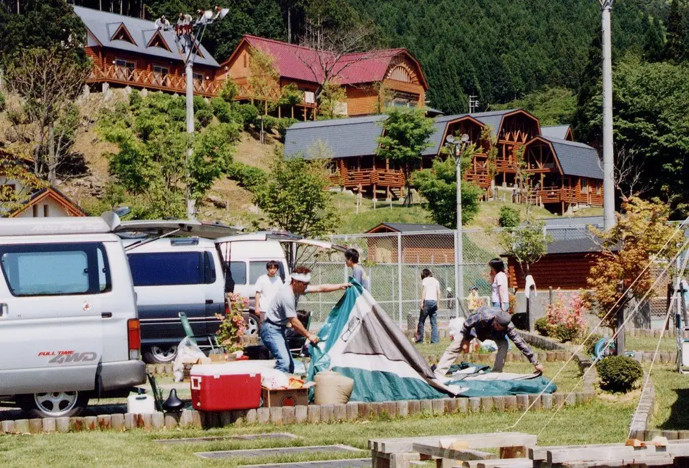
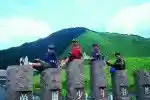
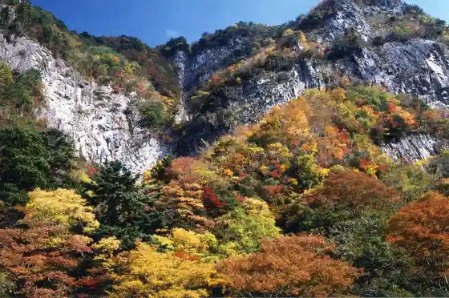
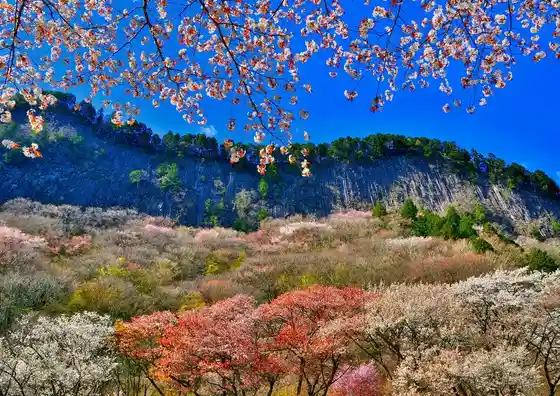
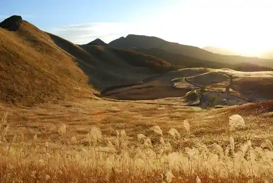

Japan / Nara / Soni
Soni, Nara
Soni · Nara
Soni
Highlighted on the Nara map.

Sights
San Birejji Soni (Oku Kyochi Oto Campground)
Soni, Nara · 0745-94-2619 · Official / source link
National Soni Seishonen Nature no Ie
Soni, Nara · 0745-96-2121 · Official / source link

Oku Kyochi Kei
Soni, Nara · 0745-94-2106 · Official / source link

Byobu Iwa Park
Soni, Nara · 0745-94-2106 · Official / source link

Soni Highlands
Soni, Nara · 0745-94-2106 · Official / source link

Soni Highlands Farm Garden
Soni, Nara · 0745-96-2888 · Official / source link
Sumi Jo Bo Falls
Soni, Nara · 0745-94-2106 · Official / source link
Hotaru Park
Soni, Nara · 0745-94-2106 · Official / source link
Yoroi Gaku
Soni, Nara · 0745-94-2106 · Official / source link
Mon Boku Shrine
Soni, Nara · 0745-94-2106 · Official / source link